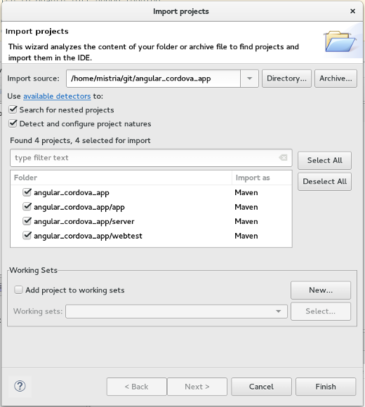

Instructions
The title should be short and snappy, written in sentence case, and using "headlinese" (compressed style). The title should not use trailing punctuation and a unique id attribute on the <tr> HTML element.
In the news description, tell users about changes they'll see in the UI. Tell component writers about changes they'll see at the client- and server-side APIs. Try to generate some excitement; save the boring details for the manual; be short and don't repeat yourself. The description should be complete sentences, with trailing punctuation.
Make the entry self-contained and mention API classes. Do not link to bugs and don't promote individuals or third-party products.
Use active voice (say "you", not "the user"), and follow other advice in the Topic Content section of the Eclipse Doc Style Guidelines.
Stick to the default font and size. Make command names (Quick Fix), keyboard shortcuts (Ctrl+1), and preference page paths (Preferences > General > Keys) bold.
Do not enclose the first paragraph of an item in <p></p> tags.
See entries in published news documents for correct examples. These published news entries have been already reviewed, while entries in the evolving document may still contain errors.
The Windows Snipping Tool actually saves to PNG on Windows 7 and can easily be used to crop and save screenshots:
- Arrange the windows for the shot
- Use the Windows Snipping Tool to capture part of the screen
- Use File > Save As to save the screenshot as a PNG
- Overlays such as red circles or boxes to call out details can be done using Microsoft Paint
Name the file in a way that is appropriate and specific to the item (e.g., key-bindings.png, rather than something generic like image.png). Use all lowercase letters in the image file name, including the ".png" file extension. As a separator, use hyphen "-" rather than underscore "_".
Put all the images in a sibling directory named "images".
This gives XHTML like:
<img src="images/foo-view.png" alt=""/>
Include a suitable alt attribute.
The alt text should be empty ("") if the image just illustrates the text.
Only use the alt text to add information that is not accessible if the page is rendered without images.
Don't write alt="Screenshot of the XY dialog". Blind users shouldn't have to skip useless repetitions.
If the alt attribute text cannot sufficiently replace the image contents
(e.g. for a screenshot that shows source code), then enclose the img element in a link
to a plain ".txt" file with the same name as the image:
<a href="images/foo-view.txt"><img ...
The images should be left-justified (as opposed to centered). Do not embed the width and height of the image.


It relies on a set of strategies (contributed via regular extension mechanism) that look at the content of the import source to detect file types, project layout patterns, or even look into some files in order to deduct which folders should be turned into projects and how those should be configured. Configuration usually involves setting up project natures and preferences.
This wizard comes with a new extension point org.eclipse.ui.ide.projectConfigurator and API so that other IDE components
can contribute detection and configuration specific to the technology they're supporting.


This feature can be disabled in the Windows dark theme by setting the swt.enable.themedScrollBar
VM argument to false (or enabled on the dark theme for other platforms by setting it to true)
in eclipse.ini or on the command line after -vmargs:
-Dswt.enable.themedScrollBar=false
Note that it may be added through css to any theme (see
properties available for customization and a css example)
-- the user may always override the theme setting by using the swt.enable.themedScrollBar VM argument.
Caveats: We're aware that the themed scroll bar is not currently available for all elements (such as trees and tables) and some places where the scroll bar was invisible (such as the compare view) may now show a scroll bar (these will only be fixed for Eclipse 4.7).
Previously the entries in the 'Capabilities' preference page were displayed in a list. If you wanted to edit them, you had to open an extra dialog. With M7 you can directly enable or disable the capacities from the preference page, as depicted in the following screenshot.

Since this dialog has API to prevent advanced editing, if the property ALLOW_ADVANCED is set to false, the original list is maintained and will be shown, which allows you to enable/disable only the main categories (not individual capabilities).

You can now restrict the search to Views, Commands or other by typing the category name followed by a colon.
For example, to filter the list of all the views, start typing "Views: " in the search-box.
A minor but useful feature has also been added: if you click in the Quick Access with the mouse, it opens up the search-box, which displays the list of last selections, and encourages you to type to search.
When fullscreen is activated, you'll see a dialog which tells how to toggle it using the active shortcut, and with a "don't show this again" checkbox.


@Retention, @Target and @Documented meta-annotations along with their applicable values while creating a new Java annotation type.


'NoMove' tag.

MCommand, your MHandledMenuItem or your MDirectMenuItem model elements by adding an entry to the Persisted State Map with the key 'HelpContextId' and your help context id as the value.

ISideEffect class and its SideEffect implementation has been moved to a sideeffect package.
The ISideEffect class is now located in the org.eclipse.core.databinding.observable.sideeffect package and the SideEffect class is now located in the org.eclipse.core.internal.databinding.observable.sideeffect package.
ISideEffectFactory class to create several ISideEffect instances, which share the same life cycle.
For example, all ISideEffect instances, which are created by the ISideEffectFactory obtained from the WidgetSideEffects.createFactory(Widget disposableWidget) method are automatically disposed once the corresponding widget is disposed.
An example would be:
ISWTObservableValue personFirstNameTextObservable = WidgetProperties.text(SWT.Modify) .observe(personFirstNameText); ISWTObservableValue personLastNameTextObservable = WidgetProperties.text(SWT.Modify) .observe(personLastNameText); ISideEffectFactory sideEffectFactory = WidgetSideEffects.createFactory(personFirstNameText); sideEffectFactory.create(person::getFirstName, personFirstNameText::setText); sideEffectFactory.create(personFirstNameTextObservable::getValue, person::setFirstName); sideEffectFactory.create(person::getLastName, personLastNameText::setText); sideEffectFactory.create(personLastNameTextObservable::getValue, person::setLastName);
"org.eclipse.swt.internal.deviceZoom"
Note: This value is not honored by SWT when user disables the HighDPI feature using "-Dswt.enable.autoScale=false" option.